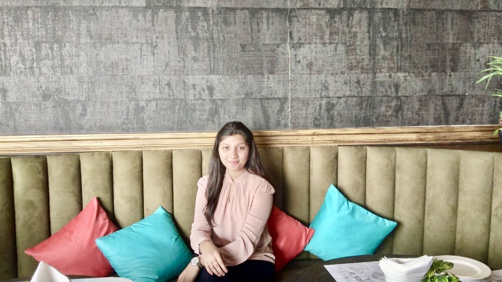
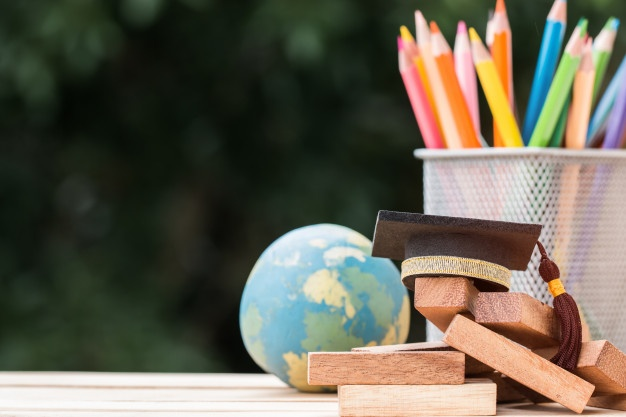
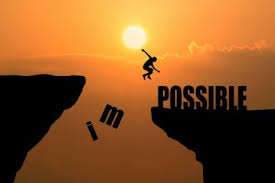

My name is Rachuri Ramya manasa. I am pursuing my btech in Indian Institute of Information and Technology Design and Manufacturing(IIITDM).I am from Computer Science department.I love to design different models as per my aspects.

Here is Acdemic growth.I have completed my schooling in Bhashyam Public School.I got 85% in my 10th standard.I studied my 11th, 12th classes in Sri chaitanya Junior College.Comingly, I prepared for my JEE MAINS entrance exam and got selected as a candidate to study in Central Govt.University.I have placed in IIITDM Kurnool as per my grade.I started my new life, career over there.I have choosen Computer science as my stream.

"
Achievement seems to be connected with action.Successful people Keep moving.They make mistakes, but they don't quit".Yes I agree to this statement and follow this as per my capability.I am not a gold medalist or a state ranker, But I feel whatever we gained from the subject and from our mistake then fruitful period is know as achievement.In my schooling i have received some gold medals(Which are artificial)though i used to feel very happy for those because i feel it as achievement.I have gone through many online courses and persuaded some certificates.I hope whatever course i am doing now uder the platform "VERZEO"if i have gain knowledge and if i am capable of doing HTML,CSS,Java script and built a web site i feel it as my big achievemnet.